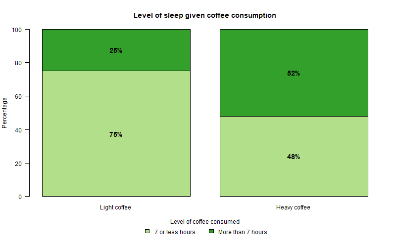
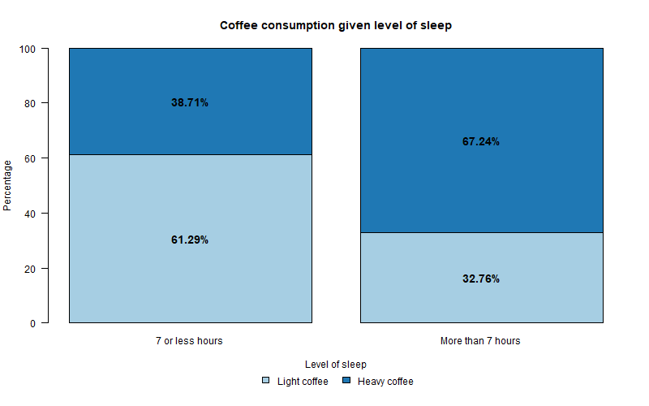

4 Solutions
4.1 Module 1
4.1.1 Question 1
Is there an association between the amount of coffee consumed and the number of hours of sleep students manage to have per night?
The following data was collected and organized into the Contingency Table (two-way table) below to see if there is an association between amount of coffee consumed (stated as 3 or less coffees per day (Light) and more than 3 coffees per day (Heavy)) and the number of hours slept per night (stated as 7 or less hours per night and more than 7 hours per night) for 151 statistics students.
| 7 hours or less per night | More than 7 hours per night | Total | |
|---|---|---|---|
| 3 or less coffees per day (Light) | 57 | 19 | 76 |
| More than 3 coffees per day (Heavy) | 36 | 39 | 75 |
| Total |
- From the data in the study,
how many students slept 7 or less hours per night?
93 studentshow many students are light coffee drinkers?
76 studentshow many students are heavy coffee drinkers AND sleep 7 or less hours per night? 36 students
- From the data in the study,
what percentage of students slept 7 or less hours per night?
Marginal %: 93/151*100=61.59%what percentage of students are light coffee drinkers?
Marginal %: 76/151*100=50.33%what percentage of students are heavy coffee drinkers AND sleep 7 or less hours per night?
Joint %: 36/151*100=23.84%what percentage of students who are light coffee drinkers also sleep 7 or less hours per night?
Conditional %: 57/76*100=75.00%what percentage of students who sleep 7 or less hours per night are light coffee drinkers?
Conditional %: 57/93*100=61.29%
- In a two-way table, display the joint distribution of level of coffee consumed and level of sleep in terms of percentages.
Joint distribution means that we divide each cell frequency by the total number of cases included in the whole study (n=151).
| 7 hours or less per night | More than 7 hours per night | Total | |
|---|---|---|---|
| 3 or less coffees per day (Light) | 57/151 = 37.75% | 19/151 = 12.58% | |
| More than 3 coffees per day (Heavy) | 36/151 = 23.84% | 39/151 = 25.83% | |
| Total | 100% |
- Using the joint distribution in (c), write 4 sentences describing what each of these 4 percentages mean (i.e. one of the sentences could be something like “90% of statistics students are light coffee drinkers and have 7 or less hours of sleep per night”).
- 37.75% of statistics students drink 3 or less cups of coffee per day and have 7 or less hours of sleep per night. - Of the 151 statistics students, 12.58% sleep more than 7 hours per night and drink 3 or less cups of coffee per day. - 23.84% of statistics students have 7 or less hours of sleep per night and drink more than 3 cups of coffee per day. - Of the 151 statistics students, 25.83% drink more than 3 cups of coffee per day and sleep more than 7 hours per night.
- Calculate, in percentages, and display, in a two-way table the following marginal distributions:
- Marginal Distribution of Level of Sleep
- Marginal Distribution of Level of Coffee Consumed
Marginal Distribution means we divide the row and column totals by the total number of cases included in the whole study (n=151).
| 7 hours or less per night | More than 7 hours per night | Total | |
|---|---|---|---|
| 3 or less coffees per day (Light) | 76/151 = 50.33% | ||
| More than 3 coffees per day (Heavy) | 75/151 = 49.67% | ||
| Total | 93/151 = 61.59% | 58/151 = 38.41% | 100% |
From the table above:
Marginal Distribution of Level of Sleep
7 or less hours = 61.59%
More than 7 hours = 38.41%
Marginal Distribution of Level of Coffee Consumed
Light = 50.33%
Heavy = 49.67%
- Using percentages,
- calculate the distributions of level of coffee consumed conditional on level of sleep (i.e. calculate the distribution of level of coffee consumed for those who sleep 7 or less hours and then the distribution of level of coffee consumed for those who sleep more than 7 hours).
Conditional Distributions mean we need to divide each cell frequency by the total of the conditional variable category - in this case the category for each level of sleep is the conditional variable.
| 7 or less hours | More than 7 hours | |
|---|---|---|
| Light | 57/93 = 61.29% | 19/58 = 32.76% |
| Heavy | 36/93 = 38.71% | 39/58 = 67.24% |
| Total | 93/93 = 100% | 58/58 = 100% |
- calculate the distributions of level of sleep conditional on level of coffee consumed.
In this case the category for each level of Coffee Consumed is the conditional variable.
| 7 or less hours | More than 7 hours | Total | |
|---|---|---|---|
| Light | 57/76 = 75% | 19/76 = 25% | 76/76 = 100% |
| Heavy | 36/75 = 48% | 39/75 = 52% | 75/75 = 100% |
- Sketch a suitable graph to display the association between the two variables, using the information from (i) (there are two ways of doing this, either using the information from your answer to f(i) or the information from your answer to f(ii)).
Based on the results from f(ii):

Figure 4.1: Conditional distribution of % level of sleep for coffee drinkers.
Or, based on the results from f(i):

Figure 4.2: Conditional distribution of % level of coffee consumed for level of sleep categories.
- *We used two categorical variables in this exercise and have examined the joint, marginal and conditional distributions. Based on this analysis so far (including your graph from part (f)), do you think there is an association between level of sleep and level of coffee consumed? Why or why not?
Yes, there does appear to be an association between level of sleep and level of coffee consumed. When you look at the first conditional distribution table (Conditional Distributions of level of coffee consumed for each level of sleep), for example, you can see that 38.71% of light sleepers (sleeping 7 or less hours) are heavy coffee drinkers whereas 67.24% of heavy sleepers (sleeping more than 7 hours) are heavy coffee drinkers. These are very different percentages which indicates an association between level of sleep and level of coffee consumed (it matters what level of sleep a person acquires as to how likely they are to be a heavy coffee drinker). Those students who sleep more than 7 hours per night are more likely to be heavy coffee drinkers than those who sleep less than 7 hours per night.
Ideas to think about:
- Does this result make sense? You would think that the more coffee you consumed the less you would sleep.
- Maybe the sample we took was not representative of all students.
Note on wording:
- Saying that two categorical variables are not associated (or not related) is the same as saying they are independent.
- Saying that two categorical variables are associated (or related) is the same as saying they are NOT independent.
4.1.2 Question 2: Repeat Q1 using Statistical Software
Using the data in Question 1, repeat the analysis using Statistical Software for this course and then compare your answers in Question 1 with your output.
Open the datafile Tutorial 1 in your Statistical Software (this file can be found in the Module 1 block on the StudyDesk, or downloaded from here). Alternatively, you can enter the summarised data yourself using the Weight Cases method shown in the accompanying video.
Make sure the Variable View is set up correctly.
Note: this step is not applicable for Excel, as there is no Variable View.Create a two-way table showing the frequencies and totals. Put Coffee Consumed in rows and Level of Sleep in columns.
| 7 or less hours | More than 7 hours | Total | |
|---|---|---|---|
| Light | 57 | 19 | 76 |
| Heavy | 36 | 39 | 75 |
| Total | 93 | 58 | 151 |
- *Display the joint distribution of level of coffee consumed and level of sleep in terms of percentages, in a two-way table. Note that this table also gives you the marginal distributions. Compare with answers in Q1.
| 7 or less hours | More than 7 hours | Total | |
|---|---|---|---|
| Light - Count | 57 | 19 | 76 |
| Light - % of Total | 37.7% | 12.6% | 50.3% |
| Heavy - Count | 36 | 39 | 75 |
| Heavy - % of Total | 23.8% | 25.8% | 49.7% |
| Total - Count | 93 | 58 | 151 |
| Total - % of Total | 61.6% | 38.4% | 100.0% |
- *Produce the conditional distributions (both Row Percent and Column Percent). Compare with answers in Q1.
The Column Percent gives % conditional on Level of Sleep, equivalent to Q1(f)(i):
| 7 or less hours | More than 7 hours | Total | |
|---|---|---|---|
| Light - Count | 57 | 19 | 76 |
| Light - % within Level of Sleep | 61.3% | 32.8% | 50.3% |
| Heavy - Count | 36 | 39 | 75 |
| Heavy - % within Level of Sleep | 38.7% | 67.2% | 49.7% |
| Total - Count | 93 | 58 | 151 |
| Total - % within Level of Sleep | 100.0% | 100.0% | 100.0% |
The Row Percent gives % conditional on Coffee Consumed, equivalent to Q1(f)(ii):
| 7 or less hours | More than 7 hours | Total | |
|---|---|---|---|
| Light - Count | 57 | 19 | 76 |
| Light - % within Coffee Consumed | 75.0% | 25.0% | 100.0% |
| Heavy - Count | 36 | 39 | 75 |
| Heavy - % within Coffee Consumed | 48.0% | 52.0% | 100.0% |
| Total - Count | 93 | 58 | 151 |
| Total - % within Coffee Consumed | 61.6% | 38.4% | 100.0% |
- *Construct a Stacked Bar Graph to display the association between level of coffee consumed and level of sleep and compare to your sketch in Question 1(f)(iii).
See the graphs above in Question 1(f)(iii) - your software output should match one of these two stacked bar graphs.